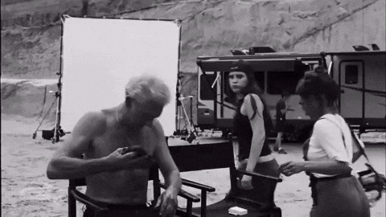

PORTAIL DE PRODUCTION
Accès aux informations du tournage
Ce lien QR identifie une demande d’accès, mais ne donne pas directement accès aux données de production.
Authentification requise
Connecte-toi avec un compte autorisé par l’équipe de production. Aucun document, contact ou horaire privé n’est affiché sur cette page sans contrôle serveur.
Le portail sécurisé sera activé après configuration de l’authentification HIPPO CORE et des fonctions de validation des jetons QR.
Retour à LA GUEUZEby @hipo.reporter